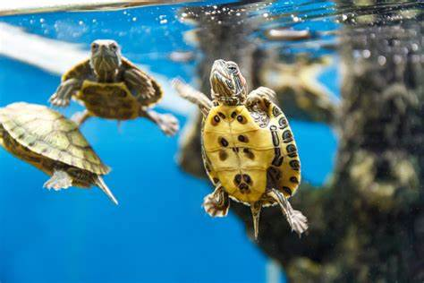

MI PRIMERA PAGINA WEB
Hola mundo
Hola mundo
Hola mundo
Hola mundo
Hola mundo
Hola mundo
- Cosas que aman las tortugas
- Cosas que odian las tortugas
Tortugas
Las tortugas son reptiles fascinantes que han existido durante millones de años. Su carácter tranquilo y su longevidad las hacen muy especiales. Son conocidas por su caparazón protector y su habilidad para adaptarse tanto a ambientes acuáticos como terrestres.

Mira la galería
Galería
Cosas que aman las tortugas
- Nadar
- Tomar el sol
- Comer vegetales
- Explorar su entorno
Cosas que odian las tortugas
- La contaminación
- El ruido fuerte
- Ser molestadas
Adopta una tortuga
Clic para adoptar